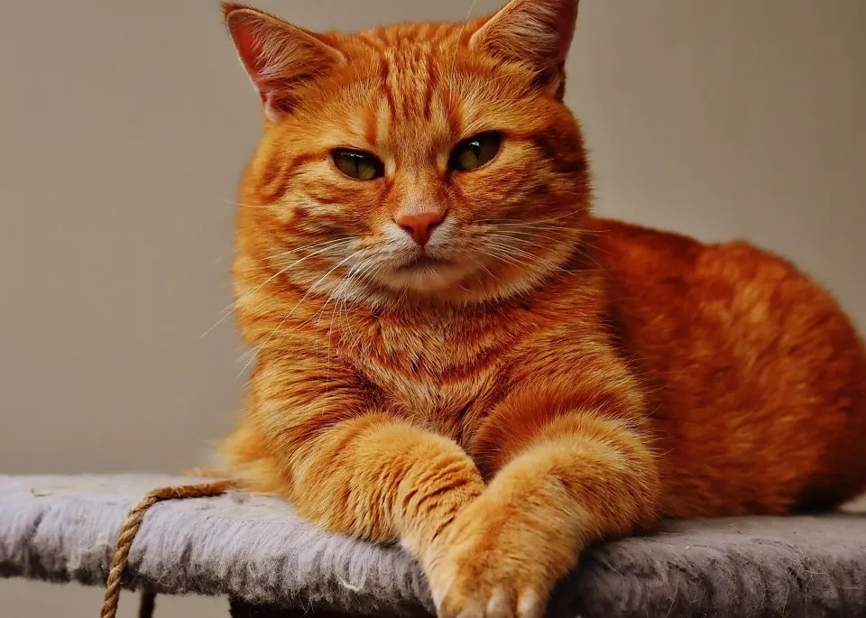

Katze
Die Hauskatze (Felis catus) ist die Haustierform der Falbkatze. Sie zählt zu den beliebtesten Heimtieren. In der Rassekatzenzucht werden oft nur die Tiere als Hauskatze bezeichnet, die keiner anerkannten Katzenrasse angehören.
Die Hauskatze ist das in Deutschland am häufigsten gehaltene Haustier.
 Bild herunterladen